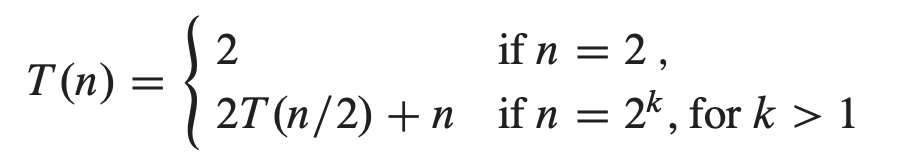

Given an input of a sorted array, write pseudocode to
search a given element in the array using a divide and
conquer algorithm. A simple linear search will take
O(n), but using divide-and-conquer, also known as binary
search, should take O(log n).
Write code in python based on your pseudocode.
Calculate the runtime of the recursive version of your
binary search.
Mergesort:
Write code in python for the mergesort algorithm as
described in the textbook. Modify the code, so that you can
see every split arrays, and every merged arrays.
Show in detail that your implemented mergesort is O(n log
n).
Recursive insertion sort:
Write pseudocode for recursive insertion sort.
Write code in python based on your pseudocode.
Calculate the runtime of the recursive version of your
insertion sort in big-O.
Strassen's algorithm for matrix multiplication:
Write pseudocode in python to implement Strassen's
algorithm described in the textbook Sec.4.2 (page 75).
Write code in python based on your pseudocode.
Calculate the runtime of your Strassen code.
Exercise 4.2: Substitution Method
Consider this recurrence equation:

Show that when n is exact power of 2, the solution of the
above recurrence is T(n) = n log n. Hint: Use the
mathematical induction.
Prove or disprove the following statements using the
substitution method:
T(n) = T(n-1) + n = O(n*n)
T(n) = T(ceiling(n/2)) + 1 = O(log n), where
ceiling() is the ceiling function.
T(n) = 2T(floor(n/2)) + n = Omega(n log n), where
floor() is the floor function.